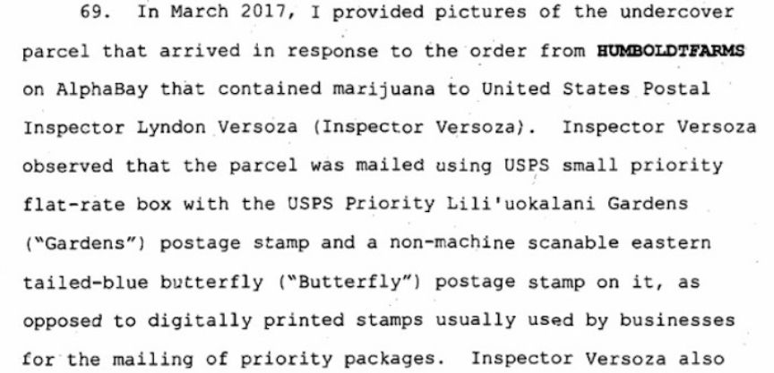
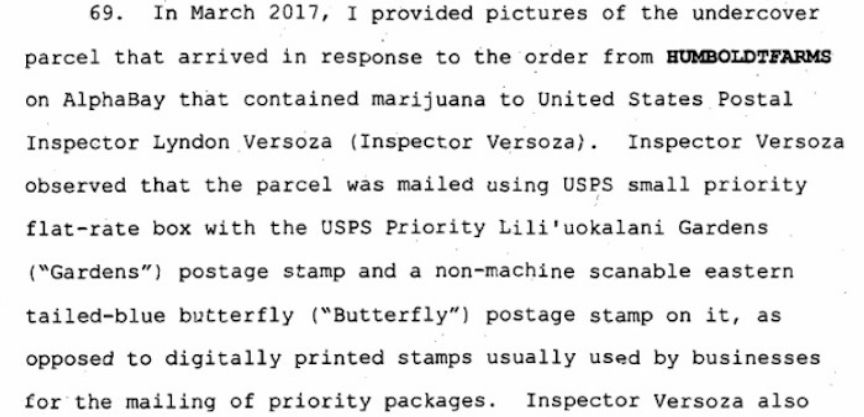

Los Angeles man Pleads Guilty to Selling Drugs on the Dark Web
~2 min read | Published on 2019-11-05, tagged Darkweb-Vendor, Drug-Bust, Drugs, Pleaded-Guilty using 488 words.
Christopher Michael Barnes, 36, of Los Angeles admitted that he was involved in the conspiracy to distribute drugs via the dark web vendor account “HumboldtFarms”. Barnes and his co-conspirators reportedly sold drugs through the “HumboldtFarms” vendor’s account from March 2015 to July 2017.
According to an announcement by U.S. Attorney McGregor W. Scott, Barnes had partnered with William James Farber, Bryan Anthony Lemons, Michael Angelo Palma, Richard Thomas Martinsen, Michele Pickerell, and Faysal Alkhayat. The group used the dark web vendor account on the now-defunct AlphaBay marketplace to sell Marijuana to users from all over the U.S.
Barnes and his co-conspirators reportedly completed more than 78,000 marijuana orders and, in the process, made “HumboldtFarms” one of the largest vendors on AlpahaBay. To service the orders some of the ring members used Pickerell’s residence to prepare and mail more than 1,000 marijuana packages per week. The sales reportedly earned the ring at least $7 million in bitcoin that they exchanged for cash through unlicensed bitcoin exchanges.
The investigations that led to Barnes’ arrest and guilty plea began as a look into the money laundering activities of Barnes’ co-conspirator Farber. According to the criminal complaint, the investigations revealed that Farber and the other members of the ring were behind the “Purefiremeds” vendor account on the now-defunct Silk Road marketplace. This revelation was made after the investigators looking into Farber’s activities linked his transactions and communications to the vendor “Purefiremeds” according to the data seized during Silk Road’s takedown.
The investigators linked “Purefiremeds” to “HumboldtFarms” through a discussion about “HumboldtFarms” on Reddit. One of the users involved in the discussion reportedly said that reports on /r/darknetmarkets claimed that “HumboldtFarms” was operated by the same vendor who used to run “Purefiremeds”.
To tie Farber to “HumboldtFarms” the investigators made an undercover purchase of 7 grams of marijuana for $40 and an additional $7 for USPS priority shipping on February 23, 2017. The drug package was then delivered on March 8, 2017. The package contained 8 grams of marijuana and had a non-existent return address. The investigators liaised with postal employees at the post office from which the package had been sent from. The investigators asked the employees to notify them if someone dropped packages wrapped in the same way to the one, they had received.
Cooperation with the postal employees coupled with surveillance led to the identification of Michael Palma who had dropped 221 drug packages at the post office on March 10, 2017. Further investigations revealed that Palma and Farber were close friends.
Months of further investigations and surveillance connected the rest of the ring members to the “HumboldtFarms” dark web drug distribution conspiracy. Most of Barnes’ co-conspirators including Farber, Lemons, Palma, Martinsen, and Faysal Alkhayat have already pleaded guilty.
Having pleaded guilty to conspiracy to possession and distribution of controlled substances Barnes will be sentenced on January 27, 2020. Barnes faces a maximum of 20 years in prison and a $1 million fine.
According to an announcement by U.S. Attorney McGregor W. Scott, Barnes had partnered with William James Farber, Bryan Anthony Lemons, Michael Angelo Palma, Richard Thomas Martinsen, Michele Pickerell, and Faysal Alkhayat. The group used the dark web vendor account on the now-defunct AlphaBay marketplace to sell Marijuana to users from all over the U.S.
Barnes and his co-conspirators reportedly completed more than 78,000 marijuana orders and, in the process, made “HumboldtFarms” one of the largest vendors on AlpahaBay. To service the orders some of the ring members used Pickerell’s residence to prepare and mail more than 1,000 marijuana packages per week. The sales reportedly earned the ring at least $7 million in bitcoin that they exchanged for cash through unlicensed bitcoin exchanges.
The investigations that led to Barnes’ arrest and guilty plea began as a look into the money laundering activities of Barnes’ co-conspirator Farber. According to the criminal complaint, the investigations revealed that Farber and the other members of the ring were behind the “Purefiremeds” vendor account on the now-defunct Silk Road marketplace. This revelation was made after the investigators looking into Farber’s activities linked his transactions and communications to the vendor “Purefiremeds” according to the data seized during Silk Road’s takedown.
A Screenshot of the HumboldtFarms Complaint
The investigators linked “Purefiremeds” to “HumboldtFarms” through a discussion about “HumboldtFarms” on Reddit. One of the users involved in the discussion reportedly said that reports on /r/darknetmarkets claimed that “HumboldtFarms” was operated by the same vendor who used to run “Purefiremeds”.
To tie Farber to “HumboldtFarms” the investigators made an undercover purchase of 7 grams of marijuana for $40 and an additional $7 for USPS priority shipping on February 23, 2017. The drug package was then delivered on March 8, 2017. The package contained 8 grams of marijuana and had a non-existent return address. The investigators liaised with postal employees at the post office from which the package had been sent from. The investigators asked the employees to notify them if someone dropped packages wrapped in the same way to the one, they had received.
Cooperation with the postal employees coupled with surveillance led to the identification of Michael Palma who had dropped 221 drug packages at the post office on March 10, 2017. Further investigations revealed that Palma and Farber were close friends.
Months of further investigations and surveillance connected the rest of the ring members to the “HumboldtFarms” dark web drug distribution conspiracy. Most of Barnes’ co-conspirators including Farber, Lemons, Palma, Martinsen, and Faysal Alkhayat have already pleaded guilty.
Having pleaded guilty to conspiracy to possession and distribution of controlled substances Barnes will be sentenced on January 27, 2020. Barnes faces a maximum of 20 years in prison and a $1 million fine.